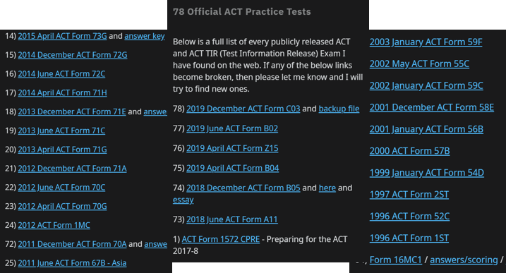
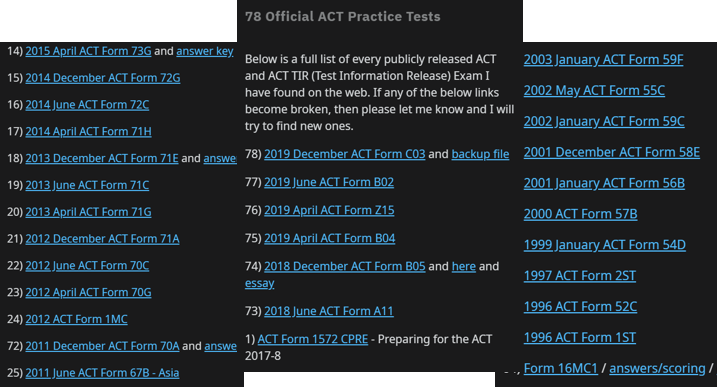

CBTClone
A web application I hacked together in 6 days for students to better prepare for the US ACT Standardised test
Access CBTCloneProblem
For a student hoping to be admitted into US Universities, Standardised Testing is a key part of admissions. Traditionally, the test is done on paper by shading a Optical Mark Recognition answer sheet. However, for international students, a computer based test (CBT) is administered instead.
While the test content is the same, there are differences that put international students at a disadvantage

There is only one Computer Based Test available for practice while there are 78 Paper Tests for practice. This
makes it difficult for students to assimilate to the differences.
Students aren’t used to the quirks of CBT.
However, for international students, a computer based test (CBT) is administered instead.
While the test content is the same, there are differences that put international students at a disadvantage

There is only one Computer Based Test available for practice while there are 78 Paper Tests for practice. This
makes it difficult for students to assimilate to the differences.
Students aren’t used to the quirks of CBT.
- There is 2-5 second processing time moving between questions meaning you cannot scan questions instantly like would you on paper. (2-5 seconds adds up on a paper with 52.5 seconds per question)
- Highlights with the digital highlighter are destroyed when moving between questions. This makes the strategy of reading a passage and highlighting key points infeasible.
These differences made it harder for international students to score the perfect scores needed for US admission.
Realising this issue, I discussed with students to validate my hypothesis. This sparked interest to develop a CBT Emulator so that we could load in more practice tests.